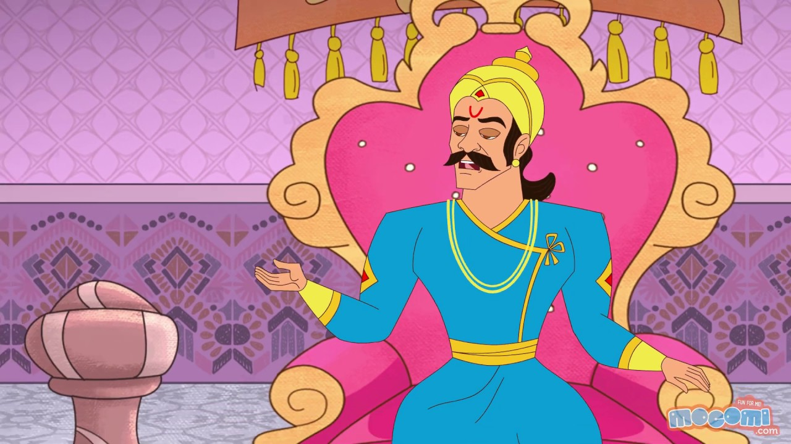

|
Long ago, in a kingdom ruled by a wise and just king, there lived a brave and compassionate prince named Amar. Prince Amar was known throughout the land for his sense of justice and his unwavering commitment to the welfare of his people. His subjects held him in high regard, and his reputation as a righteous ruler was well-deserved. One day, as Prince Amar was wandering through a dense forest on the outskirts of his kingdom, he stumbled upon a sight that filled him with both curiosity and concern. Lying by the side of a lonely road was a lifeless corpse, abandoned and forsaken. The man's life had come to a tragic and premature end, and it was evident that those who had once accompanied him had left him behind, showing no compassion for the deceased. Prince Amar, driven by his innate compassion and sense of duty, knelt beside the lifeless body. His heart swelled with empathy as he contemplated the circumstances that had led to this abandonment. Gently, he whispered a prayer for the departed soul, acknowledging the inherent dignity of every life, even in death. As he rose to his feet, Prince Amar realized that he couldn't simply leave the corpse alone, a victim of fate and indifference. He decided that he would personally give the deceased man a dignified farewell. With great care and respect, he lifted the lifeless body and carried it on his shoulders, determined to provide it with a proper burial. |
 |
|
The news of Prince Amar's compassionate act spread throughout the kingdom, and the people were deeply moved by his selflessness and humility. They saw in their prince a true embodiment of nobility and compassion. His actions inspired others to embrace kindness and empathy in their own lives. Upon reaching the capital, Prince Amar organized a solemn funeral for the deceased man, attended by both the palace officials and commoners alike. He ensured that the departed soul received the respect and honor it deserved, regardless of its station in life. The king, observing his son's actions and the profound impact they had on the kingdom, felt a sense of pride and fulfillment. He knew that Prince Amar possessed the qualities of a great leader who not only ruled with justice but also led by example. And so, the tale of "The Prince and the Corpse" serves as a powerful reminder that true nobility lies not in one's birthright but in the compassionate actions and selfless service that define a person's character. |